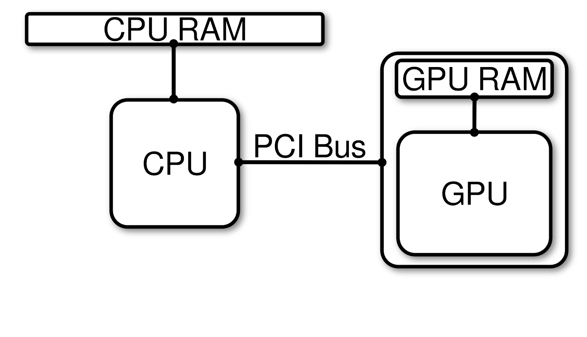
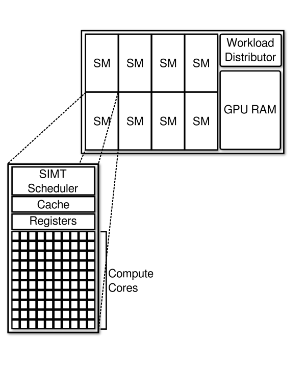
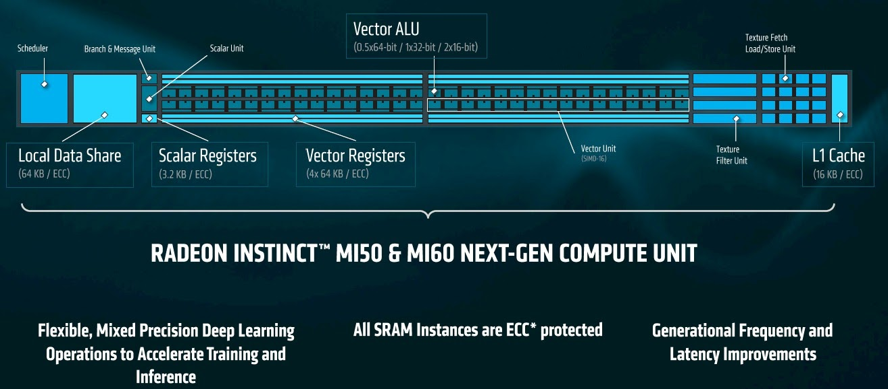
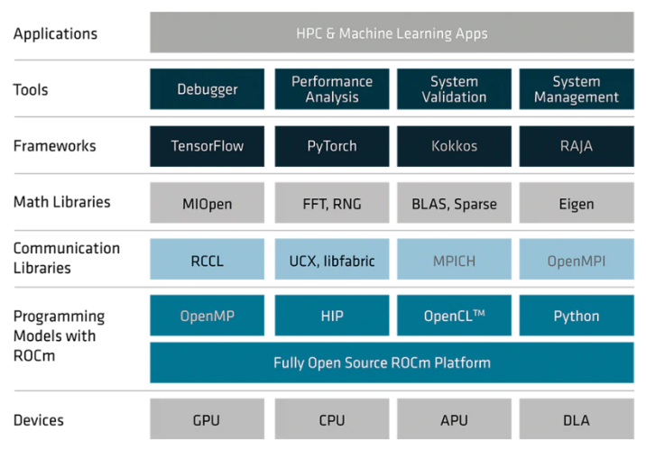
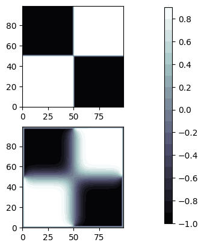

Last Updated: 2020-18-09
Over the last few decades, there has been increased interest in using Graphics Processing Units (GPUs) to perform general purpose computing tasks. This practice is often referred to as General Purpose GPU (GPGPU) programming. Using GPUs for general purpose computing tasks gained attention primarily due to the inherent scale of parallelism within GPU hardware that enables faster computation and a reduction in the time-to-solution.
Since GPUs were designed for handling graphics rendering tasks, implementing general purpose routines, like those for numerically solving partial differential equation or optimizing the weights in a neural network, was time-consuming and often error-prone. The continued interest and success of GPGPU computing led to the development of more user-friendly application programming interfaces (APIs) that allow developers to focus more attention on implementing algorithms using the syntax of compiled languages they are more familiar with, rather than thinking about how to express their algorithm in terms of graphics operations.
Before diving into GPU programming APIs and how they can help you accelerate scientific applications, let's first discuss the basics of modern GPU accelerated compute platforms to help you better understand the software development problems they help solve.
A GPU is an additional hardware component that can perform operations alongside a CPU. GPUs are either integrated into the motherboard or silicon dye alongside a CPU, or are made available through a dedicated interconnect, called the Peripheral Component Interconnect (PCI). The PCI is a physical hardware component that allows data to be transmitted between the CPU and GPU.

On GPU-Accelerated High Performance Computing platforms, you will primarily encounter servers with one or more dedicated GPUs. Dedicated GPUs have an isolated set of compute cores and their own memory space, distinct from the CPU and the CPU's memory space. The figure above illustrates simple conceptual model of a server with a CPU connected to a single GPU. This conceptual model is purposefully simplified to highlight the first hurdle that all new GPU developers must overcome : managing CPU and GPU memory spaces.
On most modern GPU accelerated platforms, migrating data between the CPU and GPU can be a bottleneck. This is caused by limits in the PCI Bus peak bandwidth. Because of this, developers must be mindful to minimize the amount of data transfer between CPU and GPU for optimal performance.
A more subtle aspect of GPU programming, driven by the fact that a GPU is a separate hardware component from the CPU, is the potential for asynchronous activities between the CPU and GPU. When developing a GPU accelerated application, kernels that can execute on the GPU are scheduled for execution by the CPU. Most modern GPU programming APIs provide calls that can force the issuing CPU process to stop and wait for the GPU kernel execution. Further, when a CPU issues multiple kernel execution instructions, these APIs can allow for serialized or asynchronous executions.
GPUs for high performance computing are available from three different vendors : AMD, Nvidia, and Intel. Currently, each has their own terminology for describing the architecture and microarchitecture. We'll briefly describe a conceptual model of a GPU and relate terminology between vendors.
In general, GPUs are comprised of a number of compute units (AMD) or streaming multiprocessors (Nvidia), "Global" GPU RAM, and a Work Group Distributor (AMD) or Workload Manager (Nvidia). On Nvidia hardware, the Workload Manager schedules work to the streaming multiprocessors, which have a Same-Instruction-Multiple-Thread (SIMT) scheduler, Cache memory, registers, and a set of CUDA Cores. On AMD Hardware, the Work Group Distributor schedules work across the compute units, which each have a scheduler, local data share, L1 Cache, a mix of scalar and vector registers, and a Vector Arithmetic Logic Unit (ALU).
GPU models are distinguished based on their microarchitecture and other characteristics, such as the number of compute units, PCI compatibility, memory and compute clock frequencies, and global memory size. For AMD GPUs, the microarchitecture refers to the architecture of the compute units.
Below is a conceptual diagram of a single compute unit in AMD's Vega 20 micro-architecture. This micro-architecture is at the core of the Radeon Instinct MI50 & MI60 GPUs and the Department of Energy's newest exascale systems, El Capitan and Frontier. On AMD GPUs, each compute unit has 64 Vector ALU's.
The table below summarizes some of the characteristics of a few of the latest lineup of AMD Radeon Instinct GPUs. In this table, we are showing GPUs with varying microarchitecture, number of compute units, and global GPU memory size. The GPU's memory clock rate and compute clock rate, together with the type of memory and the number of Vector ALU's dictate the peak performance and memory bandwidth.
Microarchitecture | Vega20 | Vega10 | Fiji |
Compute Units | 60 | 64 | 64 |
Peak FP16 | 26.5 TFLOPS | 24.6 TFLOPS | 8.19 TFLOPS |
Peak FP32 | 13.3 TFLOPS | 12.29 TFLOPS | 8.19 TFLOPS |
Peak FP64 | 6.6 TFLOPS | 768 GFLOPS | 512 GFLOPS |
Memory Size | 16-32 GB (HBM2) | 16 GB (HBM2) | 4 GB (HBM) |
Memory Bandwidth | 1 TB/s | 484 GB/s | 512 GB/s |
Now that you have some awareness of GPU hardware, let's talk about how we program GPUs to accelerate scientific applications.
In general, a GPU programming API must provide routines that developers can leverage to allocate and deallocate memory on the GPU, copy memory between the CPU and GPU, and control kernel execution. GPU programming APIs can be classified into two categories
When programming with Directive-Based APIs, developers will provide "hints" to the compiler about how to offload sections of code to the GPU. In this approach, the compiler will then generate code for allocating/deallocating memory, copying memory between host and device, and how to parallelize sections of code. This method of GPU programming has the benefit of being able to start running on GPUs quickly with little effort. Additionally, management of CPU and GPU memory is handled "behind-the-scenes" by the compiler and can help limit code complexity. In this case, compilers will more often make decisions that ensure correctness, rather than optimize performance. Because of this, performance tuning often requires verbose compiler hints to limit superfluous data transfer between CPU and GPU and sometimes require alteration of the CPU code.
When programming with Kernel-Based APIs, developers are solely responsible for creating and managing both CPU and GPU memory spaces. Additionally, developers must write compute kernels that are consistent with their CPU counterparts and issue explicit calls to launch routines when needed. While this approach increases code complexity and has a higher barrier to entry than Directive-Based approaches, the developer has precise control over the performance of GPU kernels. Additionally, developers can control when data transfers between CPU and GPU occur, allowing for a clear path to minimize time spent crossing the PCI Bus.
The table below provides a breakdown of popular GPU programming APIs, their type, which compilers expose the API, and which GPU platforms the API allows you to program for. It's important to keep in mind that directive-based APIs yield varied performance across compilers. Further, Fortran compilers that are 2003 compliant and above are able to leverage ISO_C_BINDING to expose C/C++ routines that can be called from Fortran source code, allowing C/C++ APIs to be made available in Fortran through C-interoperability.
API | Type | Compiler Support | Platforms |
Kernel | Hipcc (hcc/nvcc) | AMD, Nvidia | |
Directive | AOMP (Clang/Flang), GCC 10, XL | AMD, Nvidia | |
CUDA | Kernel | nvcc | Nvidia |
CUDA-Fortran | Kernel | PGI | Nvidia |
OpenACC | Directive | GCC 9, PGI, XL | Nvidia |
Kernel | All | All |
AMD, Nvidia, and Intel all design and manufacture GPUs for High Performance Computing. Currently, there is no unified machine code for GPUs that all vendors currently support on the hardware they produce. This has resulted in portability issues and the common "vendor-lock" problem, where HPC developers spend a significant amount of effort to port their application to a specific GPU and then lose the ability to easily transition to other hardware.
As we have just shown, there are a number of APIs available that support GPGPU programming. Currently, this ecosystem is at a turning point where APIs are shifting towards meeting open-source and portability standards that enable developers to leverage GPU hardware from multiple vendors and even multi-core CPU platforms all with the same code.
AMD is currently leading this effort through its ROCm platform. ROCm is AMD's open source platform for GPU accelerated computing that covers everything from the device driver and runtimes, to compilers, programming models and libraries. It also supports different frameworks and applications and comes with a complete set of developer tools for debugging and profiling your application to help you get the best possible performance.
The diagram below summarizes the ROCm ecosystem that helps bridge the gap between HPC and Machine Learning applications and the variety of compute hardware targets, including GPUs.
For Kernel-based GPU programming, ROCm includes the Heterogeneous-Compute Interface for Portability (HIP) and OpenCL. The Heterogeneous Interface for Portability (HIP) is AMD's dedicated GPU programming environment for designing high performance kernels on GPU hardware. AMD provides hipify tools that will convert CUDA to HIP, enhancing the performance portability of your GPU accelerated applications. The interface design of the API allows your new single source application to be compiled to target either AMD or NV hardware.
HIP is a C++ dialect, similar to CUDA, that allows for programming and AMD and Nvidia GPUs. HIP maintainers have plans to support Intel (XE) GPUs in future releases. The latest version of the ROCm package, now includes hipfort, a Fortran interface that exposes the HIP API through ISO C Binding. OpenCL is framework that is available through a C runtime API and is supported by AMD, Intel, and Nvidia GPUs and x86 CPUs. The ROCm platform provides an OpenCL runtime environment necessary for building portable, parallel applications that run on a variety of platforms.
For Directive-based GPU programming, ROCm includes the AOMP compilers for C/C++ and Fortran. The AOMP compilers are an extension of the LLVM-based Clang and Flang compilers that support the OpenMP 5.0 standard for multi-core CPU and GPU programming on both AMD and Nvidia GPUs.
In addition to the programming APIs, ROCm includes portable accelerated HPC and Machine Learning libraries, such as rocBLAS, rocFFT, rocThrust, rocSparse, Tensorflow, PyTorch, MIOpen, and many others. All of these tools are provided under open-source licensing and made freely available to help you accelerate your time-to-science in a community driven ecosystem. These libraries are beneficial when you want to quickly and optimally leverage GPUs, without having to write GPU kernels yourself.
In this codelab, we will focus on how to accelerate an application in C with HIP. You are going to work through transitioning a serial CPU-only mini-application to a portable GPU accelerated application, using AMD's HIP.
In this section, we introduce the demo application and walk through building and verifying the example. It's important to make sure that the code produces the expected result as we will be using the CPU generated model output to ensure that the solution does not change when we port to the GPU.
This application executes a 2-D smoothing operation on a square grid of points. The program proceeds as follows
This application's src directory contains the following files
smoother.To get started...
$ git clone https://github.com/os-hackathon/amd-rocm-codelabs_example-codes$ cd c++/smoother/src
$ make$ ./smoother 1000 100
You can visualize the output with the provided viz.py python script. We recommend using virtual environments to install the script's dependencies
$ python3 -m venv env
$ source env/bin/activate(env)$ pip3 install -r requirements.txt(env)$ python3 ./viz.pyThis script saves a figure to function.eps. This figure shows the initial 2-D function before smoothing on the top and the smoothed field on the bottom. An example of the visualized output from the smoother example program is shown in the image below for a grid with 100x100 cells. The initial field is shown on the top, and the smoothed field is shown on the bottom after 100 iterations. Increasing the number of iterations (the second argument) will enhance the amount of smoothing and will further blur the image.
Before starting any GPU porting exercise, it is important to profile your application to find hotspots where your application spends most of its time. Further, it is helpful to keep track of the runtime of the routines in your application so that you can later assess whether or not the GPU porting has resulted in improved performance. Ideally, your GPU-Accelerated application should outperform CPU-Only versions of your application when fully subscribed to available CPUs on a compute node.
There are a number of open-source tools available for profiling C/C++ and Fortran applications, including Tau, Score-P, Vampir, and Scalasca. In this tutorial, we are going to generate a profile and call graph using gprof.
CFLAGS=-O0 -g -pg$ make clean$ make$ ./smoother 1000 10$ gprof ./smoother gmon.out > profile.txtgprof provides a flat profile and a summary of your application's call structure indicating dependencies within your source code as a call graph. A call tree depicts the relationships between routines in your source code. Combining timing information with a call graph will help you plan the order in which you port routines to the GPU.
The first section of the gprof output is the flat-profile. An example flat-profile for the smoother application is given below. The flat-profile provides a list of routines in your application, ordered by the percent time your program spends within those routines from greatest to least. Beneath the flat-profile, gprof provides documentation of each of the columns for your convenience.
% cumulative self self total
time seconds seconds calls ms/call ms/call name
95.24 1.16 1.16 10 116.19 116.19 smoothField
2.46 1.19 0.03 10 3.00 3.00 resetF
2.46 1.22 0.03 main
0.00 1.22 0.00 1 0.00 0.00 smootherFree
0.00 1.22 0.00 1 0.00 0.00 smootherInitLet's now take a look at at the call tree. This call tree has five entries, one for each routine in our program. The right-most field for each entry indicates the routines that called each routine and that are called by each routine.
For smoother, the first entry shows that main calls smoothField, resetF, smootherInit, and smootherFree. Further, the called column indicates that smoothField and resetF routines are shown to be called 10 times (in this case) by main. The self and children columns indicate that main spends 0.03s executing instructions in main and 1.19s in calling other routines. Further, of those 1.19s, 1.16s are spent in smoothField and 0.03 are spent in resetF.
index % time self children called name
<spontaneous>
[1] 100.0 0.03 1.19 main [1]
1.16 0.00 10/10 smoothField [2]
0.03 0.00 10/10 resetF [3]
0.00 0.00 1/1 smootherInit [5]
0.00 0.00 1/1 smootherFree [4]
-----------------------------------------------
1.16 0.00 10/10 main [1]
[2] 95.1 1.16 0.00 10 smoothField [2]
-----------------------------------------------
0.03 0.00 10/10 main [1]
[3] 2.5 0.03 0.00 10 resetF [3]
-----------------------------------------------
0.00 0.00 1/1 main [1]
[4] 0.0 0.00 0.00 1 smootherFree [4]
-----------------------------------------------
0.00 0.00 1/1 main [1]
[5] 0.0 0.00 0.00 1 smootherInit [5]
-----------------------------------------------Now that we have a profile and an understanding of the call structure of the application, we can now plan our port to GPUs. First, we will focus on porting the smoothField routine and the necessary data to the GPU, since smoothField takes up the majority of the run time.
When we port this routine, we will introduce data allocation on the GPU and data copies between CPU and GPU. This data movement may potentially increase the overall application runtime, even if the smoothField routine performs better. In this event, we will then work on minimizing data movements between CPU and GPU.
In the smoother application, we have seen that the smoothField routine, called by main, takes up the most time. Looking at the function call in main.cpp and the smoothField routine in smoother.cpp, we see that this routine takes in a smoother object, a real array pointer f, and integers nx and ny that are passed by value.
81 for( int iter=0; iter<nIter; iter++){
82 // Run the smoother
83 smoothField( &smoothOperator, f, smoothF, nx, ny );
84 // Reassign smoothF to f
85 resetF( f, smoothF, nx, ny );
86 } In order to offload smoothField to the GPU, we will need to copy smoothOperator class data and the f array to the GPU. After calling smoothF, we will eventually want to copy smoothF back to the CPU before calling resetF.
The smoothField routine uses the smoothOperator -> weights array when applying the operator. Because of this, you will need to create and allocate a device copy of the weights array. After filling in the weights values on the CPU, you can copy the values over to the device array.
smoother.c so that you can make HIP API calls.#include <math.h>
#include <stdio.h>
#include <stdlib.h>
#include "precision.h"
#include "smoother.h"
#include <hip/hip_runtime.h>smoother.h for a device copy of the smoother weights.typedef struct smoother{
int dim;
real *weights;
void *weights_dev;
}smoother;smootherInit to allocate weights_dev on the GPU and insert a call to hipMemcpy in smootherInit to copy weights to weights_dev.// Allocate space for the device copy of the smoothing weights
hipMalloc(&smoothOperator->weights_dev,N*N*sizeof(real));
// Copy weights from the host to the device
hipMemcpy(smoothOperator->weights_dev,
smoothOperator->weights,
N*N*sizeof(real),
hipMemcpyHostToDevice);smootherFree to deallocate GPU memory held by weights_dev. hipFree(smoothOperator->weights_dev);Makefile to hipcc and set the necessary compiler flags. rocminfo. Once you have determined the target type, you can add --amdgpu-target=TARGET. The ROCm Wiki provides more information on compiling for different AMD GPU targets.CC=hipcc
CFLAGS=-O0 -g
LFLAGS=-lmOnce you have completed the code and Makefile modifications, you can now compile smoother and verify that data allocated and copied to the GPU.
reference/ subdirectory for later comparison. Whenever we make a change to the code, we will compare output with this reference data.$ mkdir ./reference
$ mv function.txt smooth-function.txt ./reference/*.o files and the smoother binary to ensure a clean build and make a new smoother binary$ make clean && make smoothersmoother with the same input parameters as you did in the previous section and verify the output is unchanged. We use the diff command line utility to compare the output files and the reference files. If there are no differences, diff will produce no output.$ ./smoother 1000 10
$ diff function.txt reference/function.txt
$ diff smooth-function.txt reference.txtrocprof with the --hip-trace on and --stats flags. Running rocprof will create a file called results.json that contains the data for a trace profile. Additionally, results.stats.csv and results.hip-stats.csv will contain hotspot analysis for HIP kernels and HIP API calls, respectively.$ rocprof --hip-trace --stats ./smoother 1000 10
"Name","Calls","TotalDurationNs","AverageNs","Percentage"
hipMemcpy,1,12503928,12503928,95.8586582624
hipMalloc,3,387867,129289,2.9734984242
hipFree,3,152335,50778,1.16784331343$ git add smoother.h smoother.cpp makefile && git commitmain.cpp so that you can make HIP API calls.#include <math.h>
#include <stdio.h>
#include <stdlib.h>
#include "precision.h"
#include "smoother.h"
#include <hip/hip_runtime.h>int main( int argc, char *argv[] ) {
smoother smoothOperator;
int nx, ny, nElements;
int nIter;
real dx;
real *f, *smoothF;
real *f_dev, *smoothF_dev; // Create the smoother
smootherInit(&smoothOperator);
// Allocate space for the function we want to smooth
f = (real*)malloc( nElements*sizeof(real) );
smoothF = (real*)malloc( nElements*sizeof(real) );
hipMalloc(&f_dev, nElements*sizeof(real));
hipMalloc(&smoothF_dev, nElements*sizeof(real)); hipMemcpy(f_dev, f, nElements*sizeof(real), hipMemcpyHostToDevice);
smoothField( &smoothOperator, f, smoothF, nx, ny );
hipMemcpy(smoothF, smoothF_dev, nElements*sizeof(real), hipMemcpyDeviceToHost);$ makerocprof with the --hip-trace flag. Running rocprof will create a file called profile.json. The contents of results.hip_stats.json will show calls to hipMalloc, hipMemcpy, and hipFree."Name","Calls","TotalDurationNs","AverageNs","Percentage"
hipMemcpy,22,43602127,1981914,98.9534503691
hipMalloc,3,287919,95973,0.653421757999
hipFree,3,173225,57741,0.393127872872
For Nvidia platforms, use nvprof. At this stage, you should see three calls to cudaMalloc, three calls to cudaFree, ten calls to cudaMemcpy (Device to Host), and 11 calls to cudaMemcpy (Host to Device).
$ nvprof ./smoother 1000 10
==23287== NVPROF is profiling process 23287, command: ./smoother 1000 10
==23287== Profiling application: ./smoother 1000 10
==23287== Profiling result:
Type Time(%) Time Calls Avg Min Max Name
GPU activities: 52.12% 4.6421ms 10 464.21us 427.18us 589.69us [CUDA memcpy DtoH]
47.88% 4.2636ms 11 387.60us 1.4720us 511.96us [CUDA memcpy HtoD]
API calls: 93.92% 194.18ms 3 64.727ms 135.75us 193.88ms cudaMalloc
5.20% 10.757ms 21 512.25us 22.255us 778.80us cudaMemcpy
0.39% 809.35us 97 8.3430us 537ns 396.19us cuDeviceGetAttribute
0.25% 526.66us 1 526.66us 526.66us 526.66us cuDeviceTotalMem
0.16% 339.77us 3 113.26us 2.7010us 176.22us cudaFree
0.06% 115.21us 1 115.21us 115.21us 115.21us cuDeviceGetName
0.00% 4.4240us 3 1.4740us 700ns 2.9380us cuDeviceGetCount
0.00% 4.3810us 1 4.3810us 4.3810us 4.3810us cuDeviceGetPCIBusId
0.00% 2.5650us 2 1.2820us 662ns 1.9030us cuDeviceGet
0.00% 1.0790us 1 1.0790us 1.0790us 1.0790us cuDeviceGetUuidAt this point, you now have the necessary data declared on the GPU. Additionally, you used hipMemcpy to make the input to smoothField available on the GPU. In the next step, you will create a HIP kernel that will run the smoothField algorithm on the GPU and replace the call to smoothField with a call to launch this kernel.
Routines that are executed on the GPU are typically scheduled to run by issuing instructions from the host (CPU). In HIP, a GPU kernel is launched through a call to hipLaunchKernelGGL. When scheduling GPU kernel execution, you specify
When a kernel is launched, all requested threads on the GPU execute the kernel instructions concurrently. How the threads are scheduled to execute the instructions depends on the thread grouping. Threads are grouped into blocks in the HIP and CUDA programming models. Threads within a block are able to share LDS memory and L1 Cache on GPU Compute Units (Streaming Multiprocessor in Nvidia/CUDA terminology).
Within a HIP kernel, you are able to use HIP intrinsics to determine the unique ID of a thread. This allows you to codify memory access patterns for each thread within a kernel and expose SIMD parallelism. These intrinsics are summarized the table below.
Intrinsic | Description |
hipBlockIDx_[x,y,z] | The block ID in the [x,y,z] grid directions. |
hipBlockDimx_[x,y,z] | The number of threads within each block in the [x,y,z] grid directions. |
hipThreadIDx_[x,y,z] | The local thread ID within a block in the [x,y,z] block directions. |
To see how this works, consider this simple example kernel that takes in a device array and returns the same array multiplied by two.
__global__ void myKernel(int N, double *d_a) {
int i = hipThreadIdx_x + hipBlockIdx_x*hipBlockDim_x;
if (i<N) {
d_a[i] *= 2.0;
}
}In this example, when the kernel is launched, each thread will calculate i based on its thread ID within a block, its block ID, and the number of threads-per-block (hipBlockDimx_x). A conditional is added to ensure that threads only access in-bounds addresses of d_a. Provided this conditional is met for a thread, that thread will double the i-th element of d_a, concurrently with other threads.
On AMD GPUs, threads in a block are executed in 64-wide chunks called "wavefronts". Because of this, it is good practice to make block sizes a multiple of 64 on AMD GPUs.
On Nvidia GPUs, threads in a block are executed in 32-wide chunks called "warps" and it is good practice to make the block size a multiple of 32.
In this codelab, we will always set the stream ID to 0. Using multiple streams is useful when you want to run multiple GPU kernels concurrently. This strategy is useful when you are having difficulty keeping GPUs fully subscribed and you have code that has instruction-level parallelism.
In this section, you will offload the smoothField routine to the GPU.
Let's look at the smoothField routine from smoother.c
void smoothField( struct smoother *smoothOperator, real *f, real *smoothF, int nX, int nY )
{
int iel, ism;
int N = (real)smoothOperator->dim;
int buf = (real)(smoothOperator->dim-1)/2.0;
real smLocal;
for( int j=buf; j < nY-buf; j++ ){
for( int i=buf; i < nX-buf; i++ ){
smLocal = 0.0;
for( int jj=-buf; jj <= buf; jj++ ){
for( int ii=-buf; ii <= buf; ii++ ){
iel = (i+ii)+(j+jj)*nX;
ism = (ii+buf) + (jj+buf)*N;
smLocal += f[iel]*smoothOperator->weights[ism];
}
}
iel = i+j*nX;
smoothF[iel] = smLocal;
}
}
}The outer loops, over i and j, are tightly nested loops over a 2-D grid. The size of these loops are nY-2*buf and nX-2*buf. The values of nX and nY are determined by the user through the first command line argument (we have been using 1000), and buf is 2 (smoothOperator->dim=5; see smootherInit). Within the i and j loops, we carry out a reduction operation for smLocal and then assign the value to each element of smoothF.
In the smoothField algorithm, the order in which we execute the i and j loops does not matter. Further, the size of each loop is O(1000) for the example we're working with. A good strategy for offloading this routine to the GPU is to have each GPU thread execute the instructions within the i and j loops. Ideally, then we want each thread to execute something the following
real smLocal = 0.0;
for( int jj=-buf; jj <= buf; jj++ ){
for( int ii=-buf; ii <= buf; ii++ ){
iel = (i+ii)+(j+jj)*nX;
ism = (ii+buf) + (jj+buf)*N;
smLocal += f[iel]*smoothOperator->weights[ism];
}
}
iel = i+j*nX;
smoothF[iel] = smLocal;Notice now the i and j loops are gone. Within the HIP kernel, we can calculate i and j from hipThreadIdx_[x,y], hipBlockIdx_[x,y], and hipBlockDim_[x,y], assuming that we will launch the kernel with 2-D Grid and Block dimensions. You can use something like the following to calculate i and j.
size_t i = hipThreadIdx_x + hipBlockIdx_x*hipBlockDim_x;
size_t j = hipThreadIdx_y + hipBlockIdx_y*hipBlockDim_y;Within the main program, you will be able to launch the GPU kernel, but you will need to calculate the Grid and Block Dimensions. For now, let's assume that the number of threads-per-block in the i and j loop dimensions (x and y directions) is fixed at 16. With the number of threads-per-block (in each direction) chosen, you can calculate the grid dimensions, by requiring the x and y grid dimensions to be greater than or equal to the i and j loop sizes, respectively.
int buf = (real)(smoothOperator->dim-1)/2.0;
int threadsPerBlockX = 16;
int threadsPerBlockY = 16;
int gridDimX = (nX-2*buf)/threadsPerBlockX + 1;
int gridDimY = (nY-2*buf)/threadsPerBlockY + 1;smoothField_gpu, to smoother.cpp. This routine needs to be of type __global__ so that it can be launched on the GPU (device) from the CPU (host) using hipLaunchKernelGGL.__global__ void smoothField_gpu( real *weights_dev, real *f_dev, real *smoothF_dev, int nX, int nY, int N )
{
int buf = (real)(N-1)/2.0;
size_t i = hipThreadIdx_x + hipBlockIdx_x*hipBlockDim_x + buf;
size_t j = hipThreadIdx_y + hipBlockIdx_y*hipBlockDim_y + buf;
int iel, ism;
if( i >= buf && i < nX-buf && j >= buf && j< nY-buf){
real smLocal = 0.0;
for( int jj=-buf; jj <= buf; jj++ ){
for( int ii=-buf; ii <= buf; ii++ ){
iel = (i+ii)+(j+jj)*nX;
ism = (ii+buf) + (jj+buf)*N;
smLocal += f_dev[iel]*weights_dev[ism];
}
}
iel = i+j*nX;
smoothF_dev[iel] = smLocal;
}
}main.cpp. You can place this block of code just before the iteration loop int buf = (real)(smoothOperator.dim-1)/2.0;
int threadsPerBlockX = 16;
int threadsPerBlockY = 16;
int gridDimX = (nX-2*buf)/threadsPerBlockX + 1;
int gridDimY = (nY-2*buf)/threadsPerBlockY + 1; // Copy f from host to device : f is input to `smoothField`
hipMemcpy(f_dev, f, nElements*sizeof(real), hipMemcpyHostToDevice);
// Run the smoother
hipLaunchKernelGGL((smoothField_gpu), dim3(gridDimX,gridDimY,1), dim3(threadsPerBlockX,threadsPerBlockY,1), 0, 0,
smoothOperator.weights_dev, f_dev, smoothF_dev, nx, ny, smoothOperator.dim );
// Copy smoothF_dev from device to host
hipMemcpy(smoothF, smoothF_dev, nElements*sizeof(real), hipMemcpyDeviceToHost);smoothField_gpu declaration to smoother.h__global__ void smoothField_gpu( real* weights, real *f, real *smoothF, int nX, int nY, int N);CFLAGS=-O0 -g -fmad=false before recompiling.$ make clean && make$ ./smoother 1000 10
$ diff function.txt reference/function.txt
$ diff smooth-function.txt reference/smooth-function.txtrocprof with the --hip-trace and --stats flags. Running rocprof will create a file called results.stats.csv that contains a summary of the kernels that are run on the GPU. "Name","Calls","TotalDurationNs","AverageNs","Percentage"
"smoothField_gpu(float*, float*, float*, int, int, int)",10,278624770,27862477,99.9749094615The results.hip_stats.csv file shows the HIP API calls that are executed. Notice that, for this example (10 iterations), hipMemcpy is called 22 times.
"Name","Calls","TotalDurationNs","AverageNs","Percentage"
hipMemcpy,22,334403308,15200150,97.2313227317
hipModuleLaunchKernel,20,8892061,444603,2.58546142385
hipMalloc,3,329911,109970,0.0959251363438
hipFree,3,300215,100071,0.0872907081227nvprof. $ nvprof ./smoother 1000 10
==9394== NVPROF is profiling process 9394, command: ./smoother 1000 10
==9394== Profiling application: ./smoother 1000 10
==9394== Profiling result:
Type Time(%) Time Calls Avg Min Max Name
GPU activities: 53.96% 10.307ms 10 1.0307ms 1.0293ms 1.0337ms smoothField_gpu(float*, float*, float*, int, int, int)
23.97% 4.5788ms 12 381.57us 1.4720us 522.30us [CUDA memcpy HtoD]
22.07% 4.2150ms 10 421.50us 407.71us 463.90us [CUDA memcpy DtoH]
API calls: 89.23% 189.13ms 3 63.045ms 105.94us 188.86ms cudaMalloc
10.09% 21.383ms 22 971.95us 17.322us 1.7658ms cudaMemcpy
0.25% 533.80us 97 5.5030us 172ns 379.31us cuDeviceGetAttribute
0.24% 512.54us 3 170.85us 163.89us 174.59us cudaFree
0.09% 186.85us 1 186.85us 186.85us 186.85us cuDeviceTotalMem
0.08% 162.32us 10 16.232us 7.4320us 50.629us cudaLaunchKernel
0.02% 38.694us 1 38.694us 38.694us 38.694us cuDeviceGetName
0.00% 3.8060us 1 3.8060us 3.8060us 3.8060us cuDeviceGetPCIBusId
0.00% 1.3010us 3 433ns 208ns 825ns cuDeviceGetCount
0.00% 766ns 2 383ns 186ns 580ns cuDeviceGet
0.00% 300ns 1 300ns 300ns 300ns cuDeviceGetUuidCongratulations! So far, you've learned how to allocate and manage memory on the GPU and how to launch a GPU kernel. Right now, we have the code in a state where, every iteration, data is copied to the GPU before calling smoothField_gpu and from the GPU after calling smoothField_gpu. This situation happens quite often when porting to GPUs for the first time.
The next step in this codelab is to offload the resetF routine to the GPU, even though it does not take up a lot of time. We want to offload it to the GPU so that we can move the hipMemcpy calls outside of the iteration loop in main and reduce the number of times data is transmitted across the PCI bus.
In this section, we are going to offload the resetF routine in smoother.cpp to the GPU so that we can migrate hipMemcpy calls outside of the iteration loop in main.cpp. By this point, you have worked through the mechanics for porting a routine to the GPU. Additionally, for this application, we already have all of the necessary data on the GPU that the resetF routine depends on.
resetF_gpu definition to smoother.h__global__ void resetF_gpu( real *f, real *smoothF, int nx, int ny, int buf );resetF_gpu to smoother.cpp__global__ void resetF_gpu( real *f, real *smoothF, int nx, int ny, int buf )
{
size_t i = hipThreadIdx_x + hipBlockIdx_x*hipBlockDim_x + buf;
size_t j = hipThreadIdx_y + hipBlockIdx_y*hipBlockDim_y + buf;
int iel = i + nx*j;
if( i >= buf && i < nX-buf && j >= buf && j< nY-buf){
f[iel] = smoothF[iel];
}
}resetF with resetF_gpu in main.cpp, move the hipMemcpy host-to-device calls before the iteration loop, and move the hipMemcpy device-to-host call after the iteration loop. hipMemcpy(f_dev, f, nElements*sizeof(real), hipMemcpyHostToDevice);
for( int iter=0; iter<nIter; iter++){
// Run the smoother
hipLaunchKernelGGL((smoothField_gpu), dim3(gridDimX,gridDimY,1), dim3(threadsPerBlockX,threadsPerBlockY,1), 0, 0,
smoothOperator.weights_dev, f_dev, smoothF_dev, nx, ny, smoothOperator.dim );
// Reassign smoothF to f
hipLaunchKernelGGL((resetF_gpu), dim3(gridDimX,gridDimY,1), dim3(threadsPerBlockX,threadsPerBlockY,1), 0, 0, f_dev, smoothF_dev, nx, ny, buf );
}
// Copy smoothF_dev from device to host
hipMemcpy(smoothF, smoothF_dev, nElements*sizeof(real), hipMemcpyDeviceToHost);resetF_gpu declaration to smoother.h__global__ void smoothField_gpu( real* weights, real *f, real *smoothF, int nX, int nY, int N);$ make$ ./smoother 1000 10
$ diff function.txt reference/function.txt
$ diff smooth-function.txt reference/smooth-function.txtrocprof with the --hip-trace flag. Running rocprof with the --hip-trace flag will create a file called results.hip_stats.csv that contains a summary of the HIP API calls that are executed. Notice that the number of hipMemcpy calls has been reduced to 4, from 22 calls."Name","Calls","TotalDurationNs","AverageNs","Percentage"
hipMemcpy,4,301495556,75373889,96.9712661155
hipModuleLaunchKernel,20,8972482,448624,2.88585659862
hipMalloc,3,301029,100343,0.0968212057742
hipFree,3,143194,47731,0.0460560801107nvprof. $ nvprof ./smoother 1000 10
==5017== NVPROF is profiling process 5017, command: ./smoother 1000 10
==5017== Profiling application: ./smoother 1000 10
==5017== Profiling result:
Type Time(%) Time Calls Avg Min Max Name
GPU activities: 83.03% 9.3196ms 10 931.96us 931.14us 934.88us smoothField_gpu(float*, float*, float*, int, int, int)
7.37% 826.91us 3 275.64us 1.4400us 415.81us [CUDA memcpy HtoD]
5.91% 662.82us 10 66.281us 65.536us 67.616us resetF_gpu(float*, float*, int, int, int)
3.70% 415.27us 1 415.27us 415.27us 415.27us [CUDA memcpy DtoH]
API calls: 93.01% 167.17ms 3 55.725ms 106.73us 166.94ms cudaMalloc
6.40% 11.511ms 4 2.8777ms 11.740us 10.515ms cudaMemcpy
0.27% 493.11us 3 164.37us 152.91us 180.26us cudaFree
0.11% 202.57us 97 2.0880us 204ns 83.892us cuDeviceGetAttribute
0.11% 197.07us 1 197.07us 197.07us 197.07us cuDeviceTotalMem
0.06% 111.06us 20 5.5530us 3.8360us 29.368us cudaLaunchKernel
0.02% 37.002us 1 37.002us 37.002us 37.002us cuDeviceGetName
0.00% 4.3920us 1 4.3920us 4.3920us 4.3920us cuDeviceGetPCIBusId
0.00% 2.0330us 3 677ns 237ns 1.4970us cuDeviceGetCount
0.00% 951ns 2 475ns 243ns 708ns cuDeviceGet
0.00% 393ns 1 393ns 393ns 393ns cuDeviceGetUuid
In this codelab, you learned how to port serial CPU-only routines in C to GPUs using HIP. To do this, you created device copies of CPU arrays and learned how to copy data from the CPU to the GPU and vice versa. You also learned how to write HIP kernels and launch them from the host.
In the process of doing this, you practiced a strategy for porting to GPUs that included the following steps to make incremental changes to your own source code :
If you have any questions, comments, or feedback that can help improve this codelab, you can open an issue on the os-hackathon/amd-rocm-codelabs Github repository.